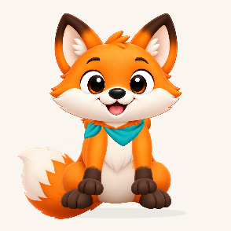
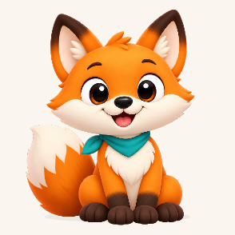
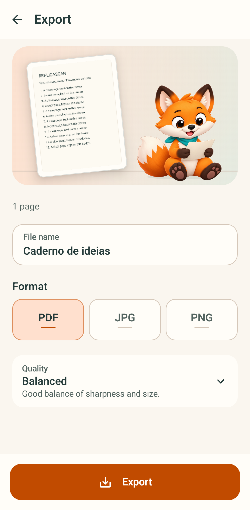
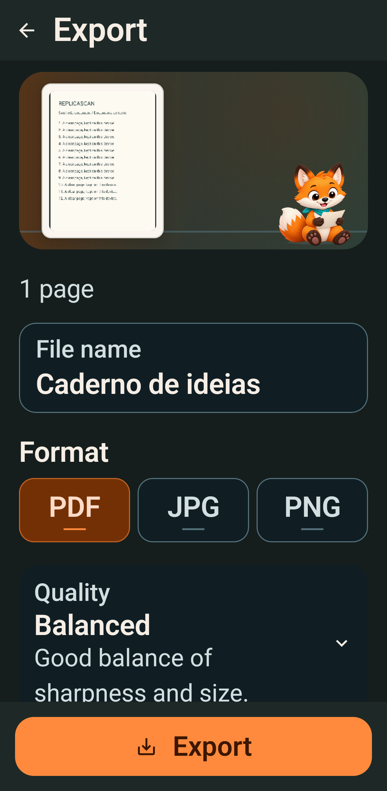
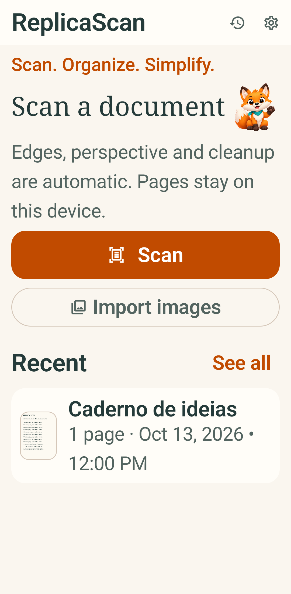

Raposa no Android: montagem rejeitada e arte restaurada
O rig articulado mostrado à esquerda foi reprovado e retirado do app. À direita está a pose aprovada restaurada. Esta prancha documenta a correção visual do APK debug, não a entrega do movimento definitivo nem uma aprovação de release.
Comparação em 112 dp

Rejeitado · braços rígidos, patas desproporcionais e cachecol sem encaixe natural.

Runtime atual · pose aprovada com patas e cachecol integrados.
Escalas do runtime restaurado
72 dp
168 dp
240 dp
Telas nativas após o rollback

Exportação · olhos abertos na pose de leitura, documento real de teste e botão primário 17sp.

Exportação · tema escuro, fonte 200%.

Home · fonte 200%.
Vídeo do APK debug
Idle restaurado no emulador API 34. Mostra a contenção visual atual; não demonstra membros articulados.
As capturas foram feitas por teste instrumental Compose com cenas e documento sintéticos; o vídeo foi gravado pelo Android. Veja o registro de bloqueios. Teste físico, fluxo real de captura/OCR/exportação e rig definitivo continuam pendentes.